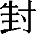
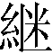

[内容提要] 跟传世的刻印本《三国志》比较，20世纪前后出土的六种《三国志》古写本残卷，字数虽然不及传世本的百分之一，但其中拥有许多值得注意的异文，从文化史、文献学、语言文字学等角度对此展开专题研究或综合研究，还有很长的路要走。
[关键词] 《三国志》古写本
近百年来，陆续出土的古文献使我们眼界大开，单是号称古写本《三国志》的残卷就已经多达六、七种，即藏于我国新疆博物馆的《吴志·吴主传》、《魏志·臧洪传》，藏于敦煌研究院的《吴志·步骘传》，藏于日本的《吴志·虞翻陆绩张温传》、《吴志·虞翻传》前篇及《吴志·韦曜华覈传》、《蜀志·诸葛亮传》。
在上述古写本中，被推定为东晋时期的写本有《吴主传》、《虞翻陆绩张温传》及《吴志·虞翻传》前篇，被推定为隋唐前后的写本有《臧洪传》与《韦曜华覈传》，被疑为近人伪造的写本有《步骘传》与《诸葛亮传》。据我们考察，落款为西晋元康八年“索綝敬书”的《蜀志·诸葛亮传》很可能是近人伪造的东西，但《步骘传》却不一定是赝品；退一步说，即使《步骘传》残卷出自近现代人的手笔，但抄写者必定有隋唐前后的《步骘传》写本作为样本。因此，本文所谓“古写本《三国志》残卷”，不包括《蜀志·诸葛亮传》。
这份晋人写本残卷1965年1月10日出土于新疆地区吐鲁番英沙古城南的一座佛塔遗址中，共存40行，凡570余字，中间偶有残缺。跟传世本《三国志》对照，古写本第一行仅存“巫”字左侧，是“是岁刘备帅军来伐至巫山秭归”的“巫”字的残余笔画；最后一行止于“敕诸军但深沟高垒”句的“高”字。
郭沫若《新疆出土的晋人写本〈三国志〉残卷》（载《文物》1972年8期）在比较了传世本与古写本的内容之后，揭示了7则异文，并对其中五则发表了意见。
据我们调查，古写本跟传世本相比，除了出现异体字100多个以外，在校读古籍方面富有研究价值的异文实有10则。关于异体字，我们拟另文讨论，本文只就郭文提到的7则和我们发现的3则异文略述己见。
（一）郭文发表于30多年以前，现在看来，有不少地方需要进一步讨论，今依郭文次序论列于下。
（1）勉——俛
古写本“据三州而虎视于天下”的“而”，不见于传世本。郭沫若说，传世本“无‘而’字，殆夺”。
郭文用“殆夺”二字评议传世本，等于向后来的研究者提出了进一步论证的要求。我们认为郭说可从，下面从两个方面略作论证。第一，上文出自东吴赵咨对魏帝曹丕称扬孙权的一段话：“获于禁而不害，是其仁也；取荊州而兵不血刃，是其智也；据三州而虎视于天下，是其雄也。”从文法角度看，古写本显然优于传世本。因为“获于禁而不害”、“据三州而虎视于天下”两句排比，均用“而”字表示转折关系；传世本没有“而”，语义、语法、修辞上均有缺憾。第二，今天我们能见到的时代最早传世本应推号称“咸平本”的《吴志》（实际上是北宋末、南宋初的刻本），从这个版本开始，直到最近四十多年来流行的中华书局校点本《三国志》，虽然都没有“而”字，但是，《太平御览》卷211的引文却有“而”字，足见北宋初期之人所见的文本还有不脱“而”字的，可与古写本互相印证。
附带说一下，赵幼文《三国志校笺》[1]在“取荊州而兵不血刃”一句下面注释云：“《太平御览》卷463引‘州’下无‘而’字，考《文选》李注、《实录》、《通鉴》、郝书，俱无‘而’字，应据删。”在这里，赵笺忽略了古写本有“而”这一事实，从而过早地得出了传世本“取荊州而兵不血刃”的“而”字属于衍文的结论。
（3）潘——鄱、番
传世本“鄱阳言黄龙见”的“鄱”，古写本作“潘”，郭沫若说，传世本“‘潘’作‘鄱’，殆误”。
郭文怀疑传世本的“鄱”属于误字，也值得讨论。在古代文献中，“潘”、“鄱”、“番”等字有同音通用的历史。例如《左传·定公六年》“潘子臣”的“潘”，《史记·吴太伯世家》引作“番”；《史记·陈涉世家》“鄱盗当阳君黥布”的“鄱”，《汉书·陈胜传》作“番”，唐颜师古的注释是：“番即番阳县也，其后番字改作鄱。”对于《史记·西南夷列传》“番陽令唐蒙”的“番”，唐张守节《史记正義》的注音是：“番音婆”。从颜师古、张守节的解说中，我们不难看出，唐宋以後习见的“鄱阳”，在先前的文献中通常写作“番阳”，有时写作“播阳”。按照古音假借的通例，当然也可以写作“潘阳”。这样看来，古写本作“潘阳”所反映的是晋代用字习惯，传世的宋元以下诸本作“鄱阳”是出自后世古籍整理工作者之手。唐人所编《群书治要·魏志》及宋刻本《三国志·魏书·武帝纪》“分豪不与”的“豪”，到了元、明、清刻印本中变成了“毫”，人们要么从从历时层面把“豪”与“毫”看成古今字，要么从共时层面把“豪”与“毫”看成通假字，却没有人用孤立、静止的观点说“豪”、“毫”二字中必定有一个错字。古写本的“潘阳”到传世本里变成“鄱阳”，跟“豪”、“毫”的演变属于同一类型。
跟郭沫若把《吴志·吴主传》的“鄱阳”看成“潘阳”的误文相反，陈乃乾把《吴志·吴主传》的“潘阳”看成“鄱阳”误文。在陈乃乾校点的《吴志·吴主传》[2]里，裴松之注引《会稽典录》中的“潘阳”，被校改为“鄱阳”，校改的依据是“从潘眉说”[3]。其实，清代学者潘眉只是说“潘阳当为鄱阳”，梁章钜也只是补充说：“吴时无潘阳县”。拿这种尚未得到实证支持的说法作为校勘的依据，难免犯主观武断的错误。如今，1972年公布于世的古写本《吴志·吴主传》的“潘阳”赫然在目，跟《会稽典录》“潘阳”遥相呼应，说明近代人习知的“鄱阳（县）”在孙权时代写作“潘阳”。事情很清楚，潘、梁身在清代，不知有古写本《吴志·吴主传》残卷；陈乃乾在1959年完成的《三国志》校点本中采用潘、梁之说，也是因为没有看到古写本《吴志·吴主传》残卷。即此一端，也可以看出古写本在文献校勘学等方面确有“一字千金”的价值。
（4）“之际” 的有无
（5）“之”字的有无
（6）之——者
古写本“犹冀言之不信”的“之”，传世本作“者”。郭沫若对这组异文也没有发表意见。
从语法、语例两个方面考察，仍以古写本为优。第一，古写本的“言之不信”表示“所言不可信”，而传世本的“言者不信”则表示“发言之人不可信”，显然是前者更符合上下文的意思。第二，“言之不信”也是当时的常用语，又如《魏志·蒋济传》注引《列异传》载孙阿事云：“阿不惧当死，而喜得为泰山令，惟恐济言不信也。”其中“言不信”三字，《太平广记》卷276《列异传·蒋济》引作“言之不信”，恰与古写本《吴志》之语相合。
（7）靡——麾、摩、
（8）传世本“陆逊部将军宋谦等攻蜀五屯，皆破之，斩其将”的“之”，不见于古写本。
上文有“之”无“之”均可通。古写本没有“之”，跟陈寿《三国志》行文求简的特点相合，比传世本更接近于陈寿原著的面貌。“破”字煞句（后面一般不加逗号或顿号），“斩”字紧跟，这种文句在传世本《三国志》并不罕见。例如《魏志·袁绍传》：“太祖救延，与良战，破斩良。”又《于禁传》：“復從攻張繡於穰，禽呂布於下邳，別與史渙、曹仁攻眭固於射犬，破斬之。”《蜀志·马超传》裴注引《典略》：“超后为司隶校尉督军从事，讨郭援，为飞矢所中，乃以囊囊其足而战，破斩援首。”
（9）传世本“讨备之功，国朝仰成”的“成”，古写本作“诚”。
古写本作“诚”，是“成”的通假字。这类通假现象屡见于其他古籍，例如《战国策·赵策一》“恐其事不成”的“成”，汉墓出土的帛书作“诚”。《老子》二十二章“诚全而归之”的“诚”，景龙碑作“成”。
据李遇春《吐鲁番出土〈三国志·魏书〉和佛经时代的初步研究》[4]一文介绍： 1965年1月10日，一农民在吐鲁番安加勅克（Anjanlik）南郊附近的一座早已颓废的佛塔下层发现一个装着《三国志》残抄本二卷及其他古文献的陶罐。其中一卷是前面提到的《吴志·吴主传》残卷，另一卷就是1977年《新疆历史文物》[5]一书收录的《魏志·臧洪传》影印件，这份影印件虽然图象模糊，但图象下面的说明却十分醒目：它的抄写时代是“十六国”时期。
方。李文在引述“中华书局本”及古抄本时也有类似的情况，所不同的是，李文引述中华书局本时所出现的讹误主要是由《敦煌学辑刊》的印刷错误早成的，而征引“抄本”时所出现的问题也可能与印刷过程中的造字困难有一定关系。
本文拟说明两点：
（一） 拿古写本影印件[7]跟宋刻本对比，除了李文揭示的异文12则，我们还发现异体字60多个，
（二）上述李文、吴文均有订补的必要，兹订补如下。
吴文说，传世本作“畏威怀亲”，古写本作“畏君亲怀”。认为传世本的“畏威”的“威”是误文，应当根据古写本校改为“君”；的“亲怀”二字误倒，应当根据传世本乙改为“怀亲”。
李文说：古写本“‘亲怀’二字旁加两点，以示颠倒。”
李文的根据，是古写本原件；吴文的根据，是古写本影印件。这样看来，古写本的原文应当是“畏君怀亲”，其中“君”字胜于传世本。吴文[8]关于“亲怀”二字误倒的内容应当删去。
——兵、侯
我们怀疑，古写本的原字未必是“侯”。从字形上推测，它很可能是“兵”字。中古时代，“兵”写作“”，是隶书中流行字形。例如古写本《吴主传》、《虞翻陆绩张温传》中的“兵”字都写成“”。“兵”的这种字形，跟“侯”的隶体字颇为相似，例如《王基断碑》、魏《三体石经》残石中“侯”都写作“
李文说，传世本“背弃国民”的“民”，古写本作“泯”。
我们揣测，古写本的原字应是“氓”。手写的隶体字“氓”、“泯”二字很相似，这两个字的释读，只有参考文义才有可能区别开来。在古汉语中，“氓”跟“民”有时是同义词，例如《诗·卫风·氓》“氓之蚩蚩嗤”，毛传的解释是“氓，民也”。古写本作“氓”，后世刻印本作“民”，在文本上体现了不同时代的用字特点。
李文说：古写本“心”旁加两点，以示除去。
隶书“顺”、“顶”二字字形相近，就向前面提到的“氓”、“泯”一样。古写本的原字是不是“顶”，待核。
三、关于《吴志·虞翻陆绩张温传》残卷
20世纪前期出土于新疆吐鲁番、日本上野淳一所藏《三国志·虞翻陆绩张温传》晋写本残卷，共80行，存1090余字，跟传世本《三国志》对照，晋写本起自《虞翻传》“权于是大怒”的“怒”，止于《张温传》“臣自入远境”的“境”。跟宋刻本比较共有异文45处，异体字120多个。
（二）有许多早先被揭示的异文，一直没有受到注意，我们应当一一研究。下举两例：
张元济早已揭示：传世本《虞翻传》“权积怒非一”的“积”，古写本”作“责”。但“责”、 “积”之异，尚待研讨。我们的初步意见是：古写本较可取。第一，责怒”是同义复词，犹言“谴责”、“谴怒”。《原本玉篇残卷》云：“謮，侧革反。《苍颉篇》：‘謮，谪也。《广雅》：謮，怒也。謮让也。今并为责字。在贝部。’”汉刘向《列女传·张汤母》：“母数责怒，性不能悛改。”据此可知，“責怒”即“謮怒”。《虞翻传》说“权积怒非一”，既云“非一”，就不不必再用“积”，所以，我们怀疑传世本的“积”可能是“謮”的讹字。第二，“责怒”又见《吴志·吴主权王夫人传》：“及权寝疾，言有喜色，由是权深责怒，以忧死。”又《朱然传》：“权深嘉绩，盛责怒融，融兄大将军恪贵重，故融得不废。”“责怒”前面用程度副词修饰。而“积怒”指忿怒蕴积于心，如《战国策·秦策》云：“先王积怒之日久。”用“日久”作补语，只论时间长短，不论次数多少，程度如何。从语词的用法看，古写本为优。
囗十九——七十
——充
这是由于不识古写本俗字而误校勘的例子。
传世本《张温传》军事兴烦”的“兴”，
中华书局校点本根据古写本校改成“凶”。事实上，古写本作“
传世本“當閉反開，當開反閉”，张元济指出古写本作“當開反閉，當閉反開”。
（五）古写本中有待研究的异体字很多，以往的学者未曾提及，为我们留下了极大的研究空间。下举二例：
（1） ——風
”字不见于《康熙字典》。这个字始见于近人李家瑞、刘复所编《宋元以来俗字谱》[13]。1932年国民政府教育部公布的《国音常用字汇》简化字表将“
”列为“風”的简化字。李圃《异体字字典》[14]附录的《胶东地区俗字表》提及“
”为胶东地区的俗字。在晚近所编的《中文大辞典》、《汉语大字典》、《中华字海》中“
”字的出处均为《宋元以来俗字谱》。张书岩等所编《简化字溯源》[15]说：“元抄本《京本通俗小说》中有‘風’的简化字‘
’”总而言之，近百年的学者一直认为“
”是最早见于元代文献的俗字。
”字就流行于世了。传世本《虞翻传》“故海内望风”及《张温传》中的“遐迩望风”的“风”，在晋写本里均作“
”。
”字的源流：魏甘露元年的写本《譬喻经》、西晋索靖的《月仪帖》、东晋写本《晋阳秋》残卷、北魏正光元年司马昞墓志、敦煌出土的唐太宗手书《温泉铭》、五代时期释彦修的书法作品，等等，一个个“
”字连续不断，在俗字史上留下了引人注目的一笔。
”字这样值得大书特书的俗字并不少见。古写本的这类俗字，无疑是今后文字学、文献学、考古学等等学科展开专题研究或综合研究的新课题。
（2）
——算
明代冯刻本《陆绩传》作“星历等数”，卢弼《三国志集解》说：“冯本算作等，误。”
古籍校勘学的科学理念要求我们，不但要指出古籍中的讹误现象，还要探求导致讹误的内部原因和外部原因。“算”在古写本里写作“
”的信息启示我们，冯本之所以“算”作“等”，其远源恐怕跟俗字“算”作“
（六）对古写本中的可疑之处及讹误展开研究，跟研究它的胜处同等重要。
（1）传世本“大王以三爵之后手杀善士，虽翻有罪，天下孰知之”的末一句，张元济指出，古写本作“口谁不知之”。
从古写本的内容看，“口谁不知之”的“不”可能是衍文。任何贵重的抄本，都难免偶有讹误，晋写本也不例外。
所谓《吴志·虞翻传》残卷前篇，指起于“果如翻言”之“果”、迄于“伏地阳醉”之“醉”的10行残卷，存100馀字，现藏日本书道博物馆。这份残卷也出土于新疆吐鲁番，内容跟上面提到的80行《虞翻陆绩张温传》晋写本残卷前後衔接。从字体看，10行残卷与80行残卷出自同一个抄手之笔，揣想原先是一个卷子，后来才断为两截。
今天很少有人知道，三国时代“魏国”的“魏”，当时写作“巍”，取义于高大。《三国志·蜀志·周群传》：“时人有问《春秋谶》曰：‘代汉者，当涂髙。此何谓也？’舒曰：‘当涂髙者，魏也。’”《玉篇·嵬部》：“巍，高大也。”这些都说明“魏”在魏晋时期通常都写作“巍”，表示“高大”的意思。
在蒋文的基础上，我们还要补充的是，古写本《吴主传》残卷中，也可以看到“魏”写作“ ”的例子。从古写本看，三国时代“巍”作为国号是通行字。
（二）玩味古写本，任何异文都有研究价值。例如：，
乎——也
传世本“翻呵禁曰：‘尔降虏，何敢与吾君齐马首乎”的“乎”，古写本作“也”。
在初步考察了中古汉语的特点之后，我们觉得古写本作“也”似胜于传世本。“也”跟口语词“邪”的读音相近；跟“乎”的读音稍远。所以在《三国志》传抄过程中，“也”和“邪”有混用现象，如古写本《虞翻传》“世岂有仙人邪”的“邪”，到了宋刻本中就变成了“也”。“邪”是中古常用的口语词，如《魏志·董卓传》注引《獻帝起居注》载李傕语曰：“郭多，盜馬虜耳，何敢乃欲與吾等邪？”“也”字也常用来记录者种语气词，如《史记·刺客列传·聂政》市行者诸众人皆曰：“此人暴虐吾国相，王县购其名姓千金，夫人不闻与？何敢来识之也！”有如古写本《张温传》：“温当今与谁为比也？
古写本《步骘传》残卷的影印图片首次公布于《文物资料丛刊》1977年第一辑[17]，可惜图片比较模糊。2000年甘肃人民出版社出版的《甘肃藏敦煌文献》所收录的彩图与黑白图版已比较清晰。这份残卷共二十五行，存440余字，异体字116个，异文19处。跟传世本《三国志》对照，可知古写本起于“骘前後荐达屈滞，救解患难”的“解”，迄于“未若顾豫章、诸葛使君、严卫尉、张奋威之为美也”的“张”字。
关于古写本的抄写时代，以往有两种说法：一是东晋说，二是近人伪造说。刘忠贵《敦煌写本〈三国志·步骘传〉残卷考释》[18]一文从避讳字及古书体式等方面断定为东晋（上限为元帝建武元年，下限为孝武帝宁康元年，即公元317-373之间）。刘涛《〈三国志·吴书·步骘传〉写本残卷辨伪》[19]一文从书法的角度认为“《步骘传》不是晋人的写本，而是晚近人的伪作”。
（一）通过对古写本的异文的初步考察，我们发现古写本远胜于传世本的异文不止一处，其中的精彩之处似非近代的书法家所能自造，因此，我们的揣测是：即使这份残卷的抄写者是“晚近人”，但他所依据的原件必定是宋刻本出现以前的古写本。关于这一点，我们拟另作专文，此不赘述。
（二）通过对中古时代俗字的考察，我们还发现，刘文“《步骘传》中奇怪的讹误”一节所指出的“不合俗写体习惯的讹误”字，可能是中古时代的俗字。下面刺举两例。
（1）
传世本《步骘传》“荆州刺史杨肇”的“荆”，古写本作“
刘文认定古写本《步骘传》“
”是晚近人的误写，恐怕为时过早，因为这种“
”字，跟古写本《步骘传》的字形极为相似。如果《李挺墓志》的“
”不能算是错字，那么古写本《步骘传》的“
（2）
——封
传世本《步骘传》“封西亭侯”、“封宜都公”、“改封江陵侯”的“封”，古写本均作“
”。刘文说：“其中2例的首笔不是作一横，而是短撇。乙本‘封’字无短撇。造假者当然见不到乙本，妄加短撇。”刘文所谓“乙本”，指代古写本《吴志·吴主传》残卷。[21]
古写本《步骘传》作“  ”，也未必是晚近才有的写法。我们在《吐鲁番出土砖志集注》所收《唐贞观廿二年（648）王朋显墓表》和《唐贞观廿四年（650）孟隆武墓表》中都可以看到这样的字形。[22]
据王树枏《新疆访古录》介绍，这份残卷1909年出土于土峪沟[23]。后来被日本收藏家中村不折购得。[24]现藏于日本书道博物馆，著录为“唐写本（?）”。至于这份残卷是不是可以确认为“唐写本”，日本学者片山章雄《吐鲁番、敦煌发现的〈三国志〉写本残卷》[25]一文从异文的角度作了考察，回答是肯定的。
在研究《三国志》文本的中国学者中，张元济整理百衲本、卢弼撰《三国志集解》、赵幼文著《三国志校笺》，都没有能够利用古写本残卷。只有易培基《三国志补注》零星地提及《韦曜传》残卷的一条异文：“‘被问寒战，形气呐吃’，卷子本作‘被问惊战，形气枯乾’。”所谓“卷子本”，就是本文所说的古写本残卷。此后，吴金华《〈三国志〉管窥》一文[26]论及《韦曜传》古写本残卷释文中的“可”字应当校订为“丐”，并用古写本的“哀识”证明传世本未必有误。与此同时，吴金华《三国志丛考·三国志集解笺记》[27]论及传世本《韦曜传》“曜运值千载”及“实不可使阙不朽之书”的校勘问题时也以古写本为重要证据。由于易书只揭示了一条异文而没有展开讨论，吴文及吴书仅仅从校释学的角度利用了残卷的四条异文，所以我们可以这样说：20世纪的中国学者，因为难以看到《韦曜华覈传》残卷的原件及影印件，所以这方面的研究显得十分薄弱。
最近，我们以“古籍异文”和“中古时代异体字”为课题作了初步调查之后发现，第一，跟传世本《韦曜华覈传》对比，古写本的异文不少于27条，这些异文为我们研究《三国志》通假字、同素逆序词及版本校勘等问题提供了重要的资料；第二，跟宋、元、明、清刻印本对比，古写本的异体字不少于62个，为我们研究宋元以前的文字形态提供了丰富的内容。关于上述两个方面的研究，因篇幅不短，我们拟另作专文。下面仅就古字及文本演变问题各举一例。
（1）合——答
南宋绍熙本及中华书局校点本《韦曜传》“貂蝉内侍，承荅天問”的“答”，在古写本中作“合”。古写本的这个异问文有助于回答以下两个问题：
一，《三国志》元本、南监本、北监本、西爽堂本、汲古阁本、局本均作“合”，张元济说：“合字疑有误。”[28]；易培基在《三国志补注》中说：“‘合’即‘答’之古文，《左传》‘既合而来奔’，同此。”，究竟那种说法比较可取？古写本告诉我们，元本、北监本等等作“合”，渊源甚古。
二，“合”与“答”在先秦是通假字，这组通假字的寿命有多长？古写本告诉我们，它们在中古还没有完全消失。
该句在宋本及元明清的本子中无异文，在其他引用该处文句的各类古籍中也未见异文。但是《韦曜华覈传》残卷却为我们提供了异文。“伏見前後符瑞彰著，神天
見”一句在宋本及以后的本子都是“神指天應，繼出累見”。而细辨文句，“伏见”引导“前後符瑞彰著，神
天
見”这两个对句，读时在“伏见”后稍微停顿，句式显得整饬对偶，“彰著”对“继见”。而且在华覈后来的上疏中我们也可以找到“继见”的例证。其文曰：“退伏思惟，荧惑桑穀之异，天示二主，至如他余锱介之妖，近是门庭小神所为，验之天地，无有他变，而征祥符瑞前后屡臻，明珠既觌，白雀继见，万亿之祚，实灵所挺，以九域为宅，天下为家，不与编户之民转徙同也。”后人以为该处四字一断，“符瑞彰著，神
天 見”为“繼出累見”。我们怀疑残卷中“神
天
見”反映了早期《三国志》的真实面貌。
以上，我们着重讨论了古写本异文的的价值和功用。毫无疑问，只要不是赝品，每一卷古写本的文献价值和文化意义都象一座丰富的矿藏。而赝品则不然。例如本文开头提到的所谓西晋索琳写本《蜀志·诸葛亮传》，它那假古董的面目之所以被戳穿，最显眼的两大漏洞就是字体不古和异文乏味。陈国灿《两件西晋敦煌写卷疑伪考》[29]一文说：“所谓的元康八年索琳写本《诸葛亮传》，在异文内容上错漏极多，毫无价值。这就让人对其真实性产生了怀疑。”是的，我们检阅了这个“晋写本”异文之后完全认同陈文的结论：那确实是个假货。试想，长达107行、可识1410余字的“晋写本”《诸葛亮传》竟然连一条有价值的异文都找不到，而且能找到的18处异文都是俗不可耐的抄写讹误，岂不是咄咄怪事？此事从反面说明，古写本异文的研究富有多种意义，它不仅可以帮助我们窥见古籍原著的真相，不仅是我们可以帮助我们贴近古代文化、贴近古代的语言文字，而且有裨于辨伪识假。
[1]巴蜀书社2001年出版
[2]见中华书局校点本《三国志》第5册1422页。
[3]见中华书局校点本《校记》1509页。
[4]载《敦煌学辑刊》1989年第1期
[5]新疆维吾尔自治区博物馆编，文物出版社出版。
[6]《古文献研究文集》第2辑，1989年南京师范大学学报增刊。
[7]载《新疆历史文物》。
[8]修订稿，见《三国志丛考》，上海古籍出版社2000。
[9]商务印书馆1938年版。
[10]商务印书馆1999年版。
[11]台北艺文印书馆1955年版。
[12]1959年初版，1982年第二版。
[13]国立中央研究院1930年版。
[14]学林出版社1997年版。
[15]语文出版社1997年版。
[16]载《论学杂著》，中州古籍出版社1985年版。
[17]见《敦煌文物研究所藏敦煌遗书目录》图版。
[18]载《敦煌学辑刊》1984年第1期。
[19]载《收藏家》2002年第2期。
[20]刘文所谓“甲本”，见其文图3。图3实为古写本《吴志·陆绩传》，但刘文却却误标为 《孙权传》。
[21]刘文所谓“乙本”，见其文图2。图2实为古写本《吴志·吴主传》，但刘文却误标为 《虞翻传》。
[22]见侯灿、吴美琳《吐鲁番出土砖志集注》巴蜀书社，2003年版第459、461页。
[23]王树枏《新疆访古录》发表于20世纪20年代发表，《中国西北文献丛书续编》1999年版收录。
[24]荣新江《海外敦煌吐鲁番文献知见录》，江西人民出版社1996版。
[25]《东海史学》1991年第26号，季忠平译，载《文教资料》2000年第3期。
[26]载《中华文史论丛》2000年第3辑。
[27]上海古籍出版社2000年版。
[28]见《百衲本二十四史校勘记·三国志校勘记》第328页。